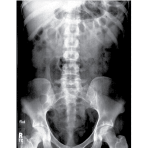

Em D.D. posicionado sobre a LCM, pernas estendidas, braços estendidos e abduzidos ao corpo.
30×40 / 35×43 longitudinal, posicionado em relação ao R.C.
⊥ na vertical orientado ao nível de cristas ilíacas.
1,00 m – com bucky.

Observação: Em apnéia após expiração.
Em ortostático; Em AP, PMS projetado sobre a LCE, braços estendidos e abduzidos.
⊥ na horizontal, orientado a 5 cm acima da cristas ilíacas.